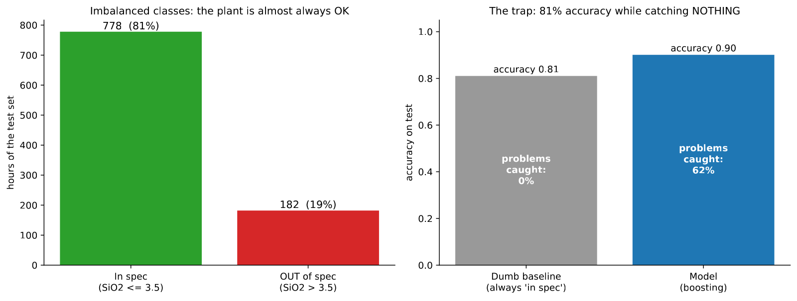
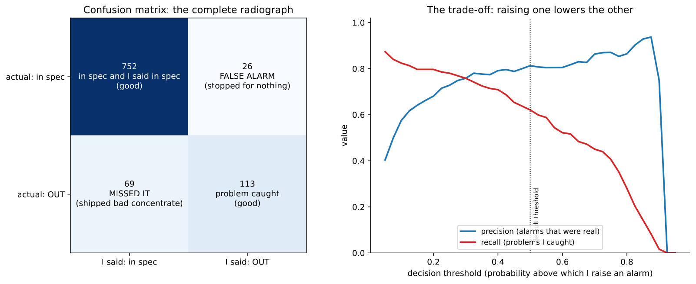

In 30 seconds
- 0.62 vs 0.77. The classifier catches 62% of the out-of-specification hours. Repeating the last assay catches 77%.
- The 81% accuracy is a trap. A model that says "everything in spec" is right 81 times out of 100 and catches not a single problem.
- Precision and recall move in opposite directions. The threshold decides which one you sacrifice, and that is an engineering decision, not the model's.
- The confusion matrix is the report, not the accuracy. 113 caught, 26 false alarms, 69 escaped.
- Here the project picked the wrong rival. The original note compared against "always in spec". Against persistence, the classifier loses.
What this module solves
So far the project has predicted a number. A plant rarely wants a number. It wants a warning: this batch is going to come out of specification.
That is classification, the other half of supervised learning. The target changes, the metrics change, and a trap appears that takes a lot of people down: accuracy.
And the most expensive lesson of the project appears for the second time. The right baseline is not the one that is convenient.
Before the theory: a toy example
A hundred batches from one shift. Twenty came out of specification.
Step 1. The model that does nothing
A model that says "all in spec", always.
right: the 80 batches that were indeed in spec
wrong: the 20 that were not
accuracy = 80 / 100 = 0.8080% accuracy without catching a single problem. That is the number to distrust.
Step 2. A cautious classifier
Now a model that warns 15 times. Of those 15 alarms, 12 were real problems and 3 were false.
| Said "in spec" | Said "OUT" | |
|---|---|---|
| Was in spec | 77 | 3 |
| Was OUT | 8 | 12 |
Three numbers come out of that:
accuracy = (77 + 12) / 100 = 89 / 100 = 0.89
precision = 12 / (12 + 3) = 12 / 15 = 0.80
recall = 12 / (12 + 8) = 12 / 20 = 0.60Precision answers: of the times I raised the alarm, how many were real. Recall answers: of the problems there were, how many did I catch.
Step 3. Lower the threshold to catch more
The same model, warning as soon as it suspects. Now it gives 30 alarms: 18 real and 12 false.
| Said "in spec" | Said "OUT" | |
|---|---|---|
| Was in spec | 68 | 12 |
| Was OUT | 2 | 18 |
accuracy = (68 + 18) / 100 = 86 / 100 = 0.86
precision = 18 / (18 + 12) = 18 / 30 = 0.60
recall = 18 / (18 + 2) = 18 / 20 = 0.90Step 4. Compare the two thresholds
| Threshold | Accuracy | Precision | Recall | Escape |
|---|---|---|---|---|
| Cautious | 0.89 | 0.80 | 0.60 | 8 |
| Sensitive | 0.86 | 0.60 | 0.90 | 2 |
The sensitive threshold catches 6 more problems and has lower accuracy. Precision and recall swapped almost exactly, from 0.80 and 0.60 to 0.60 and 0.90.
Step 5. What just happened
Neither threshold is the right one by itself. It depends on what costs more.
If sending an out-of-specification batch costs an expensive reprocessing, you choose the 2 escapes. If every false alarm stops the plant for half an hour, you choose the 3 false ones. That choice belongs to the metallurgist, not to the model.
And step 1 leaves the usual warning. An accuracy of 0.80 can mean zero problems caught.
Glossary
13 terms, in plain words
- Classification. Predicting which category something belongs to, instead of predicting a number.
- Specification threshold. The value above which the concentrate does not comply. Here, 3.5% SiO₂.
- Positive class. The one we want to detect. Here, the batch out of specification.
- Class imbalance. One category being far more frequent than the other. Here, 81 against 19.
- Confusion matrix. The four-cell table with the hits and the errors of each kind.
- True positive. A real problem the model caught.
- False positive. An alarm that was nothing. A false alarm.
- False negative. A problem that escaped.
- Accuracy. The fraction of cases classified correctly. With imbalanced classes, it misleads.
- Precision. Of the alarms raised, how many were real.
- Recall. Of the real problems, how many were caught. In Spanish, exhaustividad.
- F1. The harmonic mean of precision and recall. It sums both up in one number.
- Decision threshold. The probability above which the model raises the alarm. By default 0.5, and almost never the best.
Step by step
Step 1. Turn the number into a category
The target goes from being the silica to being a yes-or-no answer: above 3.5% is out of specification.
The threshold is not invented. 3.5 leaves 18% of the hours out, which is a realistic imbalance and falls near percentile 82 of the distribution from module 1.
Step 2. Use the same variables as module 5
The process columns plus the four memory ones. The target and the metric change, not the data.
Step 3. Measure with the matrix, not with accuracy
A single number cannot describe two different kinds of error. The confusion matrix separates them.
Step 4. Choose the threshold as an engineering decision
The model delivers a probability. Turning it into an alarm is a separate decision, and it depends on the relative cost of each error.
Step 5. Look for the right rival
Before celebrating any metric you have to ask what it is being compared against. "Always in spec" is a rival that catches nothing, so beating it proves little.
The honest rival is the same as in regression: repeating the laboratory's last assay. If the previous hour was out of specification, warn.
The code, in parts
Step 1. Build the category and see the imbalance
THRESHOLD = 3.5
y = (data[TARGET] > THRESHOLD).astype(int)
print(f"Horas fuera de spec -> train {y[is_train].mean():.1%} test {y[~is_train].mean():.1%}")line by line, 3 entries
data[TARGET] > THRESHOLD- Compares the whole column with the number and returns true or false per row.
.astype(int)- Turns true into 1 and false into 0, which is what the classifier expects.
{...:.1%}- Formats as a percentage with one decimal. 0.19 prints as 19.0%.
Umbral fuera-de-spec: 3.5 % SiO2
Horas fuera de spec -> train 17.2% test 19.0%
Step 2. Train the classifier and get the matrix
from sklearn.ensemble import HistGradientBoostingClassifier
from sklearn.metrics import confusion_matrix, precision_score, recall_score
clf = HistGradientBoostingClassifier(random_state=0).fit(X_train, y_train)
print(confusion_matrix(y_test, clf.predict(X_test)))line by line, 3 entries
HistGradientBoostingClassifier- The same boosting as module 5, in its version for categories.
confusion_matrix(real, predicho)- Returns the four cells in the order [[TN, FP], [FN, TP]].
precision_score, recall_score- Compute the two metrics from those cells.
Accuracy del baseline tonto (siempre 'en spec'): 0.810
Accuracy del modelo : 0.901
Matriz de confusion [[TN, FP], [FN, TP]]:
[[752 26]
[ 69 113]]
Precision: 0.813
Recall : 0.621
F1 : 0.704
Read in words: there were 182 hours out of specification. The model caught 113, let 69 escape and gave 26 false alarms.
Step 3. Put the right rival in front of it
alarma_persistencia = (test["sil_lag1"] > THRESHOLD).astype(int)
print(confusion_matrix(y_test, alarma_persistencia))line by line, 1 entry
test["sil_lag1"] > THRESHOLD- The rival's whole rule: if the previous hour was out, warn. No model and no training.
aviso acierto precisión atrapa falsas se escapan
siempre en spec 0.810 - 0 0 182
persistencia 0.912 0.769 140 42 42
clasificador 0.901 0.813 113 26 69The result, measured
What we expected. That the classifier would win clearly, because the accuracy rises from 0.810 to 0.901 and it catches 113 problems where the baseline caught zero.
What came out. Against the right rival, the classifier loses.
| Warning | Accuracy | Precision | Catches | False alarms | Escape |
|---|---|---|---|---|---|
| Always in spec | 0.810 | no alarms | 0 of 182 | 0 | 182 |
| Repeating the last assay | 0.912 | 0.769 | 140 | 42 | 42 |
| Trained classifier | 0.901 | 0.813 | 113 | 26 | 69 |
What it means. Persistence catches 27 more problems and gives 16 more false alarms. And it has better accuracy, 0.912 against 0.901.
To decide which is preferable you need the cost of each error. In a plant, shipping out-of-specification concentrate usually costs quite a bit more than one extra check. By that criterion, the rule without a model wins here too.
The correction the project had not made
This is the same baseline mistake that module 7 corrects for regression, and which at the time nobody applied to classification.
The original note compared the classifier against "always in spec" and called it good. That rival catches nothing, so beating it is inevitable. Measured against persistence, the advantage disappears.
The lesson is not that classification is badly posed. It is that a convenient baseline turns any model into a success, and it has to be chosen before seeing the result.
What this module leaves open
The classifier has one virtue that the table does record: it gives fewer false alarms, 26 against 42. If the cost of stopping the plant were very high, that difference could tip the balance.
It remains to find out where the model gets its warnings from. If it leans almost entirely on the previous hour's silica, then it is imitating persistence with extra steps. Module 7 measures it with permutation importance and with SHAP.
Watch out
- Accuracy with imbalanced classes means nothing. Here 0.810 is achieved without catching a single problem.
- Precision and recall do not rise together. Lowering the threshold catches more and pollutes with false alarms. It is a trade, not an improvement.
- The default threshold is 0.5 and it is almost never the right one. It comes from a convention, not from the cost of your process's errors.
- Choosing the threshold is the process's decision. The model delivers probabilities. Whoever pays for the reprocessing decides where to cut.
- A baseline that catches nothing is not a baseline. It is a scarecrow.
- The confusion matrix is reported in full. A lone F1 hides whether the problem is the false alarms or the escapes.
Metallurgical bridge
This is exactly a grade alarm system in the control room, and the two metrics have plant names.
Recall is how many bad batches slip past you to the port. Precision is how many times you stop the plant for nothing. No metallurgist needs the difference explained, nor the trade between the two.
The threshold is where you set the alarm's setpoint. Set it too tight and it fires all shift and the operator ends up ignoring it, which is the worst possible outcome. Set it loose and bad batches get through.
And the accuracy trap is the control chart that almost always says everything is fine. A plant that meets specification 81% of the time makes "nothing is happening" a very good and completely useless prediction. The value is in the exceptions, not in the average.
Review
A model is right 81% of the time. Is it good?
It cannot be known without the class split. Here 81% of the hours are in specification, so a model that always says "in spec" is right exactly that 81% without catching a single problem.
With imbalanced classes, accuracy mostly measures the majority class. You have to ask for the whole confusion matrix, or at least precision and recall on the class that matters. In this project the model reaches 0.901 accuracy, and the informative number is another one: it catches 113 of 182 problems.
Explain precision and recall the way you would tell a plant manager.
They are the two ways of getting an alarm wrong, and both cannot be improved at once.
Recall is how many bad batches you catch out of all there were. If it is 0.62, almost four in ten slip past you. Precision is how many of your alarms were real. If it is 0.81, one time in five you stop to check for nothing.
Lowering the threshold catches more bad batches and multiplies the useless stops. Raising it does the opposite. Where to put that threshold depends on what costs more in your plant.
The classifier catches 113 problems and the baseline catches 0. Why is that not a win?
Because that baseline is a scarecrow. "Always in spec" catches nothing by construction, so beating it proves no skill.
The honest rival uses information the plant already has: the laboratory's last assay. With that rule, training nothing, 140 problems out of 182 are caught and the accuracy is 0.912, better than the model's 0.901. The right comparison changes the verdict completely. It is the same mistake module 7 uncovers for regression, applied here.
Persistence catches 140 and the model 113, but the model gives 26 false alarms against 42. Which do you choose?
It depends on the cost of each error, and that is the right answer in an interview.
If a false alarm costs half an hour of stopped plant, persistence's 16 extra false alarms cost eight hours. If an out-of-specification batch costs a full reprocessing, the 27 extra problems persistence catches are worth far more than that. In metallurgy the second usually weighs more, so the rule without a model wins. What you cannot do is decide it by looking only at accuracy.
What should be checked before discarding the classifier altogether?
Where it gets its decisions from. If its dominant variable is the previous hour's silica, then it is reproducing persistence with extra steps, and there is nothing to rescue.
If instead it also leans on process variables, it could be detecting something persistence does not see, even if today it does worse overall. That check is done with permutation importance and with SHAP, and it is exactly what module 7 measures.